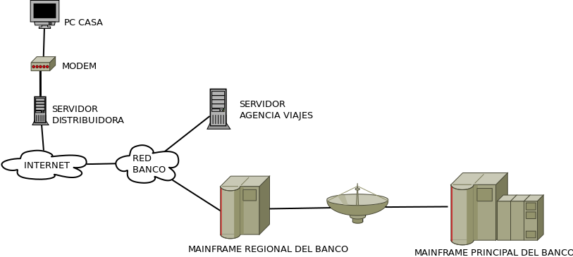
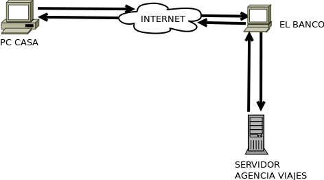

Volver atrás
Ejercicio 01.01.01.
Bajo nivel de la Red informática
El PC de casa, que pertenece a una red privada, esta conectado a un router, que realiza la tarea de firewall y de puerta de enlace, se conecta al servidor de la distribuidora entre la red privada e Internet para conectar con la red del banco. Por otro lado, el servidor del banco recibe la solicitud de transferencia, la procesa y envia la respuesta al PC de casa. Al mismo tiempo el servidor de la agencia de viajes se comunica con el banco para comprobar el ingreso.
Arquitectura cliente-servidor.
EL PC de casa cumple con la función de cliente ya que es él quien solicita el permiso a través de Internet para hacer la transferencia, conectándose así al servicio del banco, éste realiza el pago a la empresa de viajes; una vez comprobado el ingreso, la agencia confirma al PC de casa que la compra se ha realizado con éxito.